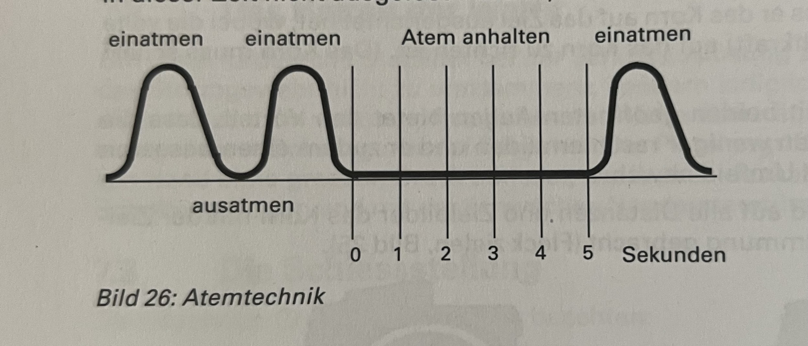
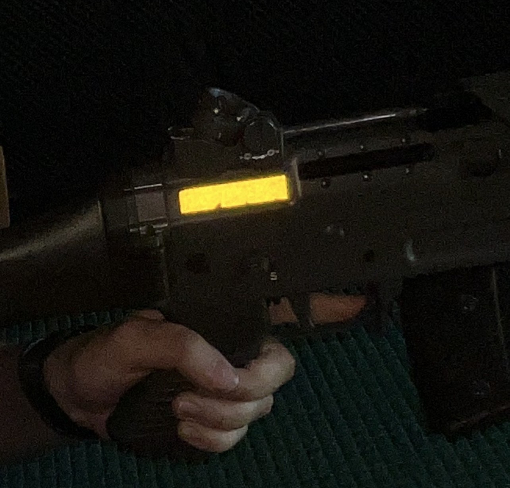
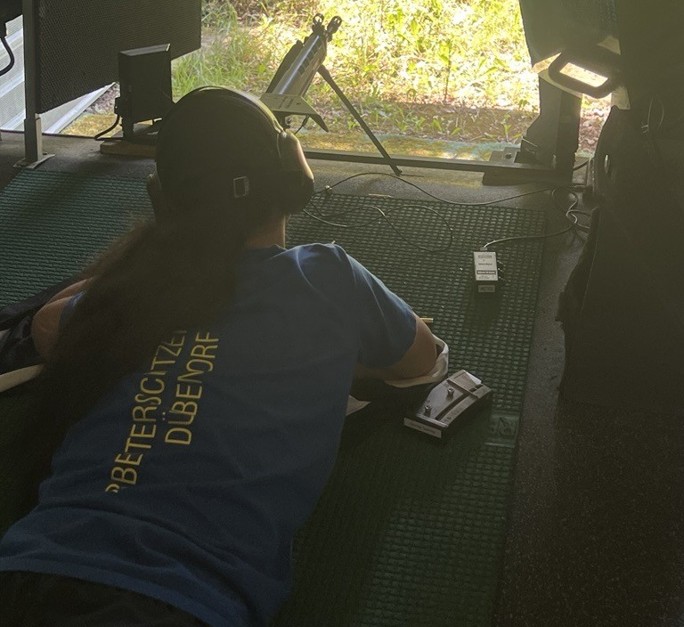

Schiesstechnik
Projektübersicht
.jpg)
Ziel des Projekts
Das Ziel dieses Projekts besteht darin, die eigene Schießtechnik kontinuierlich zu verbessern und dadurch eine höhere Präzision sowie konstante Ergebnisse im Training und Wettkampf zu erzielen.
Durch die Analyse von Haltung, Atmung, Zielbild und Abzug werden technische Fehler erkannt und gezielt korrigiert.
Analysierte Bereiche
🎯 Zielaufnahme
Optimierung des Zielbildes und der Visierung vor jedem Schuss.
.jpg)
💨 Atmung
Kontrollierte Atemtechnik zur Reduzierung von Bewegungen.

🖐️ Abzug
Sauberer und gleichmäßiger Druck auf den Abzug ohne Verreißen.

🏹 Körperhaltung
Stabile Position für maximale Wiederholgenauigkeit.

Verbesserungsmassnahmen
- Regelmäßige Videoanalyse der Schussabgabe
- Training der Halte- und Zielphase
- Optimierung der Körperhaltung und Balance
- Wiederholbare Vorbereitungsroutine vor jedem Schuss
- Gezieltes Konzentrations- und Mentaltraining
Ergebnis
Durch die konsequente Anwendung der analysierten Verbesserungen konnte die Schussgruppe deutlich verkleinert und die Konstanz über mehrere Serien hinweg erhöht werden. Besonders die Kombination aus stabiler Haltung und kontrollierter Atmung führte zu einer spürbaren Steigerung der Präzision.
Fazit
Die Schießtechnik bildet die Grundlage für nachhaltigen Erfolg im Sportschießen. Kleine technische Anpassungen können große Auswirkungen auf die Gesamtleistung haben und ermöglichen eine kontinuierliche Weiterentwicklung im Training sowie im Wettkampf.
← Zurück zu den Projekten